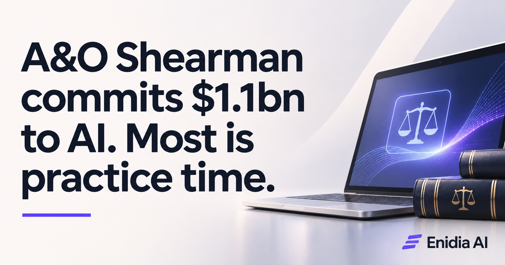

Analysis · Who owns the AI
A&O Shearman commits $1.1bn to AI. Most is practice time.

A&O Shearman has committed $1.1bn to AI over five years, with most of the investment coming from its legal practices developing specialist AI tools and services. The firm is investing in its own applications while continuing to rely on external model and infrastructure providers. How much of the AI stack should a law firm control?
A&O Shearman announced its commitment on 5 November, during a week of significant legal AI developments highlighted by The Legal Wire. Addleshaw Goddard announced a firm-wide Harvey deployment for more than 3,400 professionals from January 2027, while Nikki Shaver is set to join Davis Polk on 1 December as its first Chief AI and Knowledge Officer.
Three percent of every practice’s time
A&O Shearman says the majority of its $1.1bn commitment will come from “each practice investing at least 3% of its time” developing specialist AI tools and services within its area of law.
The firm is building capabilities within individual practices while continuing to use commercial AI platforms.
There are four years of groundwork behind that decision. Allen & Overy, one of the firm’s predecessors, began deploying generative AI in 2022 and launched ContractMatrix, developed in partnership with Harvey and Microsoft, in December 2023. A&O Shearman reports that in September 2026, 96 percent of its partners and 93 percent of its lawyers used its AI tools. This is a firm extending something that already works.
Why we think this is the important part
Enidia was founded three years ago on the belief that law firms would eventually want greater control over their AI systems, including the models, infrastructure and data processing environments.
A&O’s announcement is another sign that major law firms increasingly see AI development as a capability worth building internally, rather than relying exclusively on tools supplied by vendors. A firm does not ask every practice to allocate at least 3 percent of its time to developing AI tools if it sees that capability as a commodity it can rent.
Allen & Overy was the first major law firm to partner with Harvey in 2023. Its ContractMatrix, developed with Harvey and Microsoft, combines the firm’s legal expertise and specialized workflows with externally supplied AI models and infrastructure. A&O controls important parts of the application while relying on technology provided by its partners.
Which layer do you actually need to own
Where are the client’s documents stored and processed, and who can access them? Running AI on infrastructure the firm controls allows it to keep that processing within its own environment, without relying on an external model provider to handle confidential documents.
What happens to the bill as usage grows? API-based pricing typically increases with the amount of text processed. With locally hosted models, the cost is driven primarily by the infrastructure and its capacity rather than by individual requests.
And when a partner signs, can the firm show where each answer came from? That depends on the application's verification and audit features, not who owns the hardware. Our answers come back as Found, Inferred or Absent, each with its verbatim source and locator, and every run produces a certificate that goes into the matter file.
Controlling the model and infrastructure gives a firm more direct control over where data is processed and how inference capacity is managed. Traceability, by contrast, must be built into the application whether the model runs locally or in the cloud. For smaller firms, deciding which capabilities to build internally matters even more, because their resources are limited.
What a firm without a billion can take from this
The 3% commitment is an idea smaller firms can adopt. In a firm of forty lawyers, allocating 3% of total lawyer time to AI development is equivalent to approximately 1.2 full-time positions. That capacity could support systematic improvements to internal workflows and the development of specialized tools.
Where this gets easier
Leading open-weight models now approach proprietary frontier performance on many tasks, although the gap varies by task. Improvements in hardware price-performance can also reduce the cost of running models with comparable capabilities. Whether local infrastructure makes economic sense still depends on the workload, required capacity and operating costs.
The first question remains important. Keeping documents and processing within a firm-controlled environment simplifies decisions about external data access and cross-border transfers, although applicable legal obligations still need to be assessed. That is the part of the stack we chose to own, and the reason we chose it is the same today as it was when we started.
If you want to see it
We run a one-month pilot on non-confidential material, on your hardware or ours. The three agents and the Legal AI Verification Standard are on the site.
Related: Should legal AI be able to do everything? · ROI calculator
Sources: A&O Shearman, 5 November 2026; Financial Times, 5 November 2026; The Legal Wire, 10 November 2026.
Try Enidia AI for free with your Google login.
Open app.enidia.ai